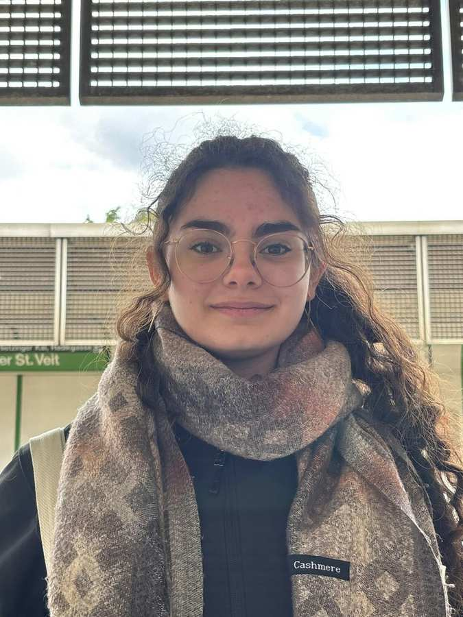

Likrat Blog
Willkommen bei "Likrat – Lass uns KLARTEXT reden!"
In unserer Kolumne geben unsere Likratinos*as ganz persönliche Einblicke: Sie teilen Erfahrungen, Gedanken und erzählen offen, was jüdisches Leben für sie bedeutet – ehrlich, vielfältig und direkt aus dem Alltag. Hier sprechen junge Jüdinnen und Juden KLARTEXT – über Identität, Begegnungen und alles, was sie bewegt.
Klartext mit Rachel
April 2025
Rachel, 23 Jahre, Likratina seit 2020
In dieser Ausgabe teilt Likratina Rachel ihre Geschichte:
Als ich vor fünf Jahren bei Likrat angefangen habe, hätte ich mir niemals vorstellen können, so lange Teil dieses Projekts zu bleiben. Likrat basiert schließlich auf dem Peer-to-Peer-Prinzip: das Ziel ist es, gleichaltrige Likratinos und Likratinas in Schulklassen zu schicken, um Begegnungen auf Augenhöhe zu ermöglichen.
Doch mit der Zeit habe nicht nur ich mich verändert, sondern auch Likrat. Aus den klassischen Begegnungen mit Schüler*innen sind im Laufe der Jahre viele weitere Formate entstanden: Heute sprechen wir auch mit Student*innen, Lehrer*innen, Polizist*innen in Ausbildung und geflüchteten Menschen (mit Unterstützung von Dolmetscher*innen). Wir machen das, weil uns bewusst geworden ist, dass die Themen, über die wir sprechen, für alle Altersgruppen relevant sind.
Wenn ich gefragt werde, warum ich immer noch bei Likrat aktiv bin, obwohl ich durch mein Studium und meinen Beruf sehr eingespannt bin, dann erzähle ich von den Momenten am Ende jeder Begegnung. Von Menschen, die anfangs unsicher oder sogar skeptisch waren, die nicht wussten, was sie erwartet, und sich vielleicht nie zuvor mit einer jüdischen Person unterhalten haben. Und die mich am Ende anlächeln, sich für meinen Mut, meine Offenheit, und für die Zeit, die ich ihnen geschenkt habe bedanken.
Ich engagiere mich nicht nur für “die Anderen”. Ich tue es auch für UNS. Likrat stärkt auch von Innen- Das ist wichtig gerade in einer Zeit in den News und Medien und Windeseile durch die Sozialen Medien kursieren und Meinungen dadurch geprägt werden.
Bei Likrat treffen viele das erste Mal auf eine jüdische Person, es ist der erste Kontakt mit realem und authentischen gelebten Judentum. Natürlich kann man in einer Stunde niemanden wirklich kennenlernen, aber manchmal reicht ein einziges Gespräch, und der Moment, um zu zeigen: Wir sind auch nur Menschen. Man muss keine Angst haben Fragen zu stellen und neugierig zu sein. Offenheit kann einem Türen öffnen, von denen man nicht wusste, dass sie überhaupt existieren.
Klartext mit Amit
März 2025

Amit , 17 Jahre, Likratina in Ausbildung :
In dieser Ausgabe teilt Likratina in Ausbildung Amit zum Thema Normalisierung des „Jüdisch sein in Wien“ ihre Gedanken.
Mit vier Jahren bin ich von Israel nach Wien gezogen. Anfangs suchten meine Eltern einen österreichischen Kindergarten für meine Geschwister und mich, aber im Gegenteil zum durchschnittlichen österreichischen Kleinkind, hatte ich keine blauen Augen oder blondes Haar, sondern braune Locken und kein Verständnis für die deutsche Sprache. Schließlich entschieden sich meine Eltern, mich in die ZPC zu schicken. Wir sind keine religiöse Familie, also hatte ich vieles dort erst kennengelernt. Aber ich sah aus wie die anderen Kinder, manchmal wurde sogar Hebräisch gesprochen und Deutsch hatte ich auch bald im Griff.
Die jüdische Gemeinde in Wien ist wie eine Bubble: Mitten drinnen ist es sehr leicht die Außenwelt, das restliche Wien, aus den Augen zu verlieren- und wenn man als Außenstehender nicht danach sucht, wird man die Gemeinde nicht mitbekommen.
Nach der Volkschule wechselte ich in eine österreichischen Schule, ungefähr 30 Minuten vom Stadtzentrum entfernt. In meiner Klasse waren viele Christen und ein paar Moslems. Im Laufe der folgenden sieben Jahre verlor ich, bis zu einzelnen Familienfreunden, den Kontakt zur jüdischen Gemeinde. Es passierte langsam, aber mit der Zeit merkte ich, wie sehr es mir fehlte und wie einsam man sich fühlen kann, wenn man merkt, dass es im Alltag niemanden gibt, der auch ein Jude ist, oder wenigstens etwas darüber weis.
Letztes Jahr erzählte mir eine Freundin über ihrer Erfahrung in Likrat. Nach viel hin- und her meldete ich mich für den Jahrgang 2025 an. Am Anfang hatte ich Angst, dass ich nicht reinpassen würde, weil ich schon viel vergessen hatte und mich nicht so gut auskannte, aber ich fand sehr schnell Freunde, und lernte viel von den Seminaren. Plötzlich sind um mich Leute gewesen, mit denen ich Kultur teilte und ich musste nichtmehr zweimal nachdenken, bevor ich mich als israelische Jüdin vorstellte. Eine Freundin, die ich in Likrat kennenlernte, lud mich in eine Jugendorganisation, BBYO, ein. Auch dort fand ich eine zweite Familie.
Im vergangenen Halbjahr habe ich mich dank Likrat in der jüdischen Gemeinde integriert und es hat wirklich eine Art von Leere in mir ersetzt. Die Normalisierung des Judentums im österreichischen Alltag ist genau das, was ich mit Likrat erzielen will- sodass man sich als Jude auch außerhalb der Gemeinde nicht allein fühlt.
Klartext mit Julia
Dezember 2024
Julia, 21 Jahre, Likratina seit 2023:
In dieser Ausgabe teilt Likratina Julia zum Thema Integration ihre Gedanken:
Immer wieder wird mir bewusst, dass unsere Gemeinsamkeiten weitaus stärker sind als unsere Unterschiede. Als Likratinos und Likratinas wagen wir den Schritt ins Unbekannte, wenn wir Räume wie den Österreichischen Integrationsfonds (ÖIF) betreten. Dieser Schritt ist für mich stets mit gespannter Neugier und fast kindlicher Begeisterung verbunden. Denn egal, wie eine Begegnung verläuft, ich weiß: Ich werde etwas Neues lernen und unvergessliche Erinnerungen mitnehmen.
Ich denke an eine Begegnung im ÖIF zurück, die zunächst von spürbarer Anspannung geprägt war. Wir waren Juden – oft in den Medien auf eine Weise dargestellt, die uns fremd und verzerrt erscheinen lässt. Es tauchten viele Fragen auf: zum Judentum, zu unserem Alltag in Wien, zum aktuellen Krieg. Doch mit jeder Minute wurde die Atmosphäre im Raum lockerer. Am Ende löste sich die anfängliche Spannung wie Nebel auf. Dies geschah, weil unser Gespräch uns näher brachte und eine Wärme entstand, die zuvor gefehlt hatte.
Die Begegnung im ÖIF endete mit Lächeln, Umarmungen und einem tiefen Gefühl der Verbundenheit. Ein syrischer Teilnehmer sagte am Ende, dass wir, das jüdische Volk, nicht dem Bild entsprechen, das die Medien – besonders im Nahen Osten – oft zeichnen. Solche Momente zeigen, dass friedliches Zusammenleben möglich ist. Es sind diese Begegnungen, in denen Worte Brücken bauen und Wärme Spannungen auflöst. Nach jeder Begegnung fühle ich eine Flamme aus Freude und Stolz in mir auflodern, weil ich sehe, wie die Arbeit von Likrat die Welt ein kleines Stück wärmer und heller macht.
Umso stolzer macht es mich, dass Likrat mit dem Integrationspreis des Österreichischen Integrationsfonds (ÖIF) in der Kategorie „Engagement gegen Antisemitismus“ ausgezeichnet wurde. Diese Ehrung würdigt unsere kontinuierliche Arbeit und setzt ein klares Zeichen: Der interkulturelle Dialog muss weiter gefördert werden, um Vorurteile abzubauen und das Miteinander zu stärken.